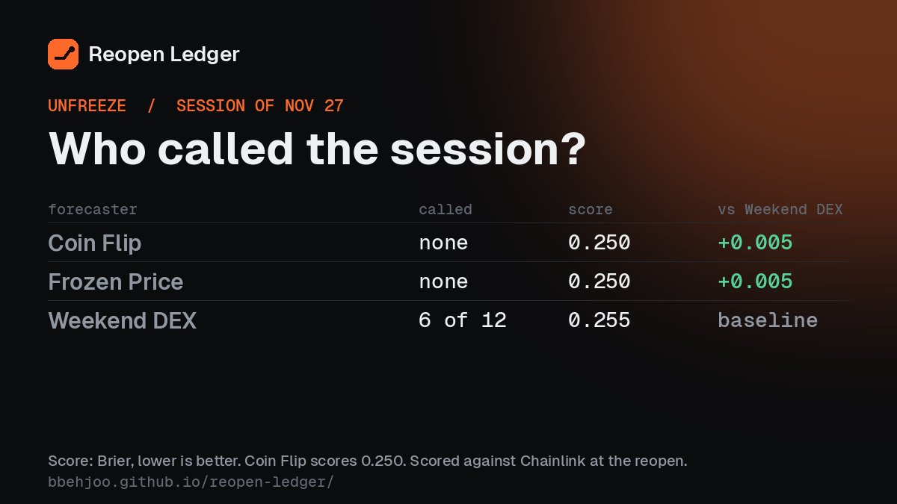
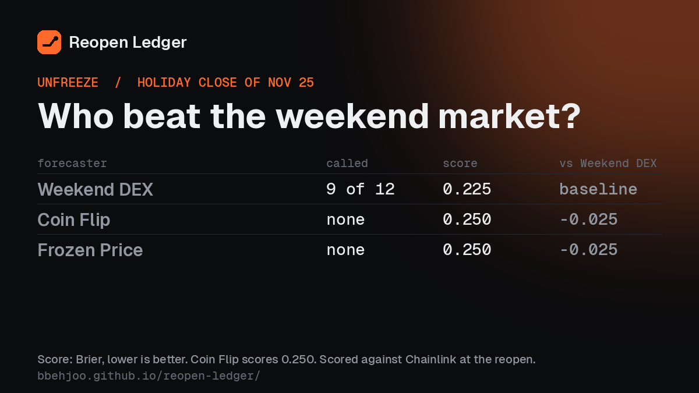

The board
Every forecaster with a record, scored against Chainlink when each window closes. Lower score is better; a coin flip scores 0.250.
0 / 25
outside forecasters on the record, goal by Dec 1. 0 outside predictions so far; house wallets never count.

Share on X
Share on XThe rivals to beat
0.216
Weekend DEX: the last-hour weekend DEX price, read as odds. Computed over 14 weekends and holidays since Aug 24, as if it had been on the record. It had the direction right 69% of the time. On weekday closes it scores 0.255, worse than a coin flip.
0.250
Coin Flip: says 50% on every stock, every window. Any forecaster with real skill scores below it.
0.250
Frozen Price: says nothing moves. Its odds score like a coin flip; it is the rival for the size of the move.
Forecasters
| rank | forecaster | windows | score | vs Weekend DEX | vs coin flip | edge, luck discounted |
|---|---|---|---|---|---|---|
| 1 | 0x398a…db01Weekend DEX | 12 | 0.2117 | +0.006 | +0.153 | -0.0140 |
| 2 | 0x004a…f456Coin Flip | 12 | 0.2500 | -0.174 | +0.000 | -0.0731 |
| 3 | 0x8af8…5a9cFrozen Price | 12 | 0.2500 | -0.174 | +0.000 | -0.0731 |
With a few dozen windows, skill and luck cannot yet be told apart. Ranks need 5 scored windows and discount lucky streaks, which reduces, but does not remove, the chance that a rank reflects luck. With many forecasters, the best of them will look skilled by chance.
Rival details: the Weekend DEX since Aug 24
Computed for every resolved window from the data, as if it had been on the record (it was not: house records start when the contract is deployed). This is the forecaster to beat.
| windows | count | stock-windows | score | vs coin flip | direction right | no usable DEX price |
|---|---|---|---|---|---|---|
| closed spans (weekends, holidays) | 14 | 140 | 0.2163 | +0.135 | 69.3% | 28 |
| daily windows | 67 | 637 | 0.2547 | -0.019 | 51.4% | 157 |
House wallets (labelled) follow the published schedule and are excluded from every usage figure. Open windows show who committed, never what; probabilities appear here after the window resolves.
Open windows
| window | records count until | status | slate tokens | wallets committed |
|---|---|---|---|---|
| closed 2026-11-27 (Fri) -> 2026-11-29 (Sun) | 2026-11-29 Sun 18:00 EST | records counting | 12 | 2 |
| daily 2026-11-30 (Mon) | 2026-11-29 Sun 21:00 EST | records counting | 12 | 0 |
| daily 2026-12-01 (Tue) | 2026-11-30 Mon 20:00 EST | records counting | 12 | 0 |
| daily 2026-12-02 (Wed) | 2026-12-01 Tue 20:00 EST | records counting | 12 | 0 |
| daily 2026-12-03 (Thu) | 2026-12-02 Wed 20:00 EST | records counting | 12 | 0 |
| daily 2026-12-04 (Fri) | 2026-12-03 Thu 20:00 EST | records counting | 12 | 0 |